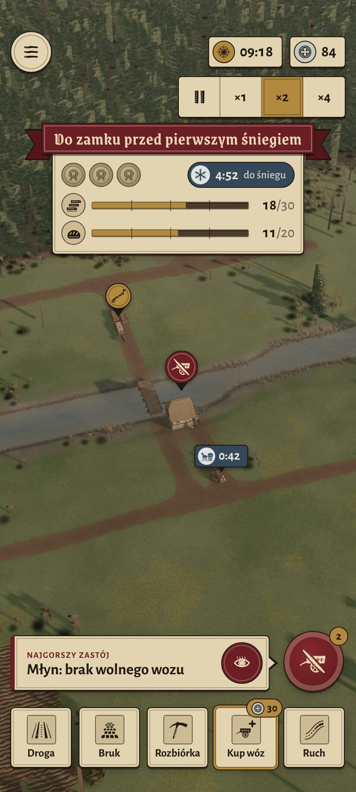
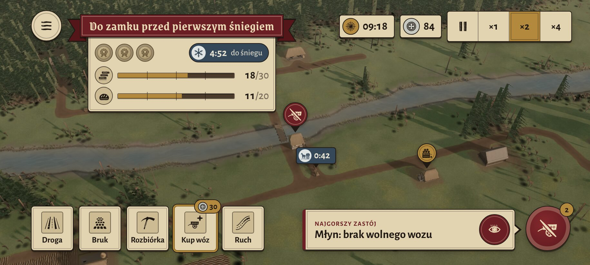

Góra z A: menu, czas, srebro, prędkość (×2) i wstęga z kontraktem (3 pieczęcie, 4:52 do śniegu, deski 18/30, chleb 11/20).
Dół z B: najgorszy zastój z „Pokaż”, czerwona pieczęć alarmu „2”, karty narzędzi z podświetlonym „Kup wóz 30”.
Wersja klasyczna: cienkie linie, małe zaokrąglenia, wino/łupek/mosiądz zamiast jaskrawych barw, płaska wstęga, woskowe pieczęcie, cienkie paski. Dymek zastoju pojawia się po stuknięciu pinezki nad młynem.